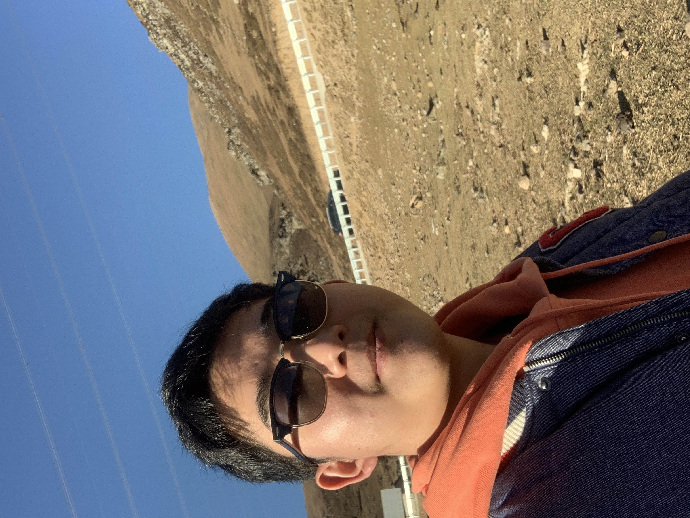

Student ID:20923507
Our app is designed to provide users with an advanced digital healthcare experience. It enables online consultation with doctors, AI-based diagnostic analysis, and a community platform where patients can communicate and support each other.
Our goal is to make medical care more accessible and convenient, reducing waiting times and enabling patients to have their health-related questions answered from the comfort of their own homes. With this app, medical consultations can be conducted online via video or voice call, and AI diagnostic analysis helps patients to quickly receive information about their conditions. Furthermore, the patient community allows them to share their experiences with others, reduce feelings of social isolation, and gain valuable knowledge from other patients with similar conditions.
Together, these features make our app an indispensable tool for anyone interested in taking control of their health online. We want to empower patients to be proactive about their health while providing them with a convenient, secure, and easy-to-use platform. Ultimately, our app is committed to enhancing the overall patient experience, improving healthcare outcomes, and helping people lead healthier, happier lives.
Over the past semester, I have taken a course in HCI (human-computer interaction), which has provided me with a deeper understanding of interface design, user experience, and human-computer interaction.
During the course, I learned about the importance of considering user needs when designing interfaces. I gained insight into how to conduct user surveys and design user tests to better understand user needs. In addition, I learned about the importance of optimizing interface design and providing feedback to enhance user experience.
In practical applications of these concepts, I designed a simple user interface and continuously optimized it based on user feedback. I also applied usability evaluations and prototype testing to projects throughout the semester.
I encountered some challenges along the way. For instance, it was important to approach problem-solving from a UI/UX design perspective and to pay attention to details when understanding user needs. Technical limitations also presented some design problems, yet with continued learning and experimentation, I was able to successfully complete each project and address my classmates’ questions in the classroom.
Overall, the course has provided me with a deeper appreciation of the theoretical and practical aspects of HCI and has improved my ability to enhance user experience through application of that knowledge. I am confident that these skills will serve as a strong foundation for my future career.
In the first group task, I was responsible for the POV (point of view) design. My main goal was to create a seamless and immersive user experience that would allow users to easily navigate and understand the content of the application. I started by conducting a user survey to better understand the target user group and their needs. I then created a user journey map that helped me identify pain points that needed to be addressed. Once I had a clear understanding of the user's requirements, I started to sketch out and design wireframes that were iteratively refined through feedback from my peers.
In the second group task, I was responsible for designing the forum page of the application. I wanted to create a design that was visually appealing, easy to use, and would encourage users to actively participate in discussions. To achieve this, I paid particular attention to creating a clear and concise user interface that would make it easy for users to find relevant topics and post comments. I also incorporated various features such as sorting and filtering options, as well as user profiles to enhance the user experience. Overall, I took a user-centred approach to both tasks and focused on creating designs that would meet the needs of the target users, while also delivering an engaging visual experience.
Over the past semester, my studies in HCI have provided me with a wealth of knowledge and valuable insights. Through learning a variety of design theories and frameworks around human-computer interaction, I have gained a deeper appreciation and understanding of how design choices impact user experience across platforms.
In particular, my coursework emphasized the importance of user research and design iteration to improve engagement and satisfaction with products. I learned how to develop user personas, conduct user testing, and implement feedback in order to create design solutions tailored to specific user needs and preferences.
Collaborating with peers on group projects, including design critiques and presentations, also taught me the importance of varied perspectives and effective communication in creating high-quality design solutions.
Within this framework of user-centered design, I gained practical skills in prototyping, wireframing, and conducting usability evaluations, which will be highly applicable to my future career goals. Overall, the course not only provided me with a solid foundation in HCI, but also fostered an understanding of the importance of empathy and collaboration in creating impactful design.